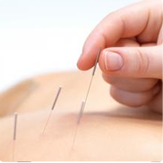

战略支持单位：
中国老年保健医学研究会 l
卫计委《健康指南》杂志社

【肩周炎】治疗套餐，包括：针灸、推拿、拔罐疗法肩周炎】治疗套餐，包括：针灸、推拿、拔罐疗法...
总有一种方法适用你总有一种方法适用你总有一种方法适用你总有一种方法适用你
肩周炎的康复离不开肩部功能锻炼。虽说吃药可以帮助我们缓解病情，但是只能暂 缓症状，对病情并没有较大好处，而且容易复发，若患者能肩周炎的康复离不开肩部功能锻炼。虽说吃药可以帮助我们缓解病情，但是只能暂 缓症状，对病情并没有较大好处，而且容易复发，若患者能肩周炎的康复离不开肩部功能锻炼。虽说吃药可以帮助我们缓解病情，但是只能暂 缓症状，对病情并没有较大好处，而且容易复发，若患者能肩周炎的康复离不开肩部功能锻炼。虽说吃药可以帮助我们缓解病情，但是只能暂 缓症状，对病情并没有较大好处，而且容易复发，若患者能虽说吃药可以帮助我们缓解病情，但是只能暂 缓症状，对病情并没有较大好处，而且容易复发，若患者能
咨询专家
【肩周炎】治疗套餐，包括：针灸、推拿、拔罐疗法...
总有一种方法适用你
肩周炎的康复离不开肩部功能锻炼。虽说吃药可以帮助我们缓解病情，但是只能暂 缓症状，对病情并没有较大好处，而且容易复发，若患者能肩周炎的康复离不开肩部功能锻炼。虽说吃药可以帮助我们缓解病情，但是只能暂 缓症状，对病情并没有较大好处，而且容易复发，若患者能
咨询专家
【肩周炎】治疗套餐，包括：针灸、推拿、拔罐疗法...
总有一种方法适用你
肩周炎的康复离不开肩部功能锻炼。虽说吃药可以帮助我们缓解病情，但是只能暂 缓症状，对病情并没有较大好处，而且容易复发，若患者能肩周炎的康复离不开肩部功能锻炼。虽说吃药可以帮助我们缓解病情，但是只能暂 缓症状，对病情并没有较大好处，而且容易复发，若患者能
咨询专家
【肩周炎】治疗套餐，包括：针灸、推拿、拔罐疗法...
总有一种方法适用你
肩周炎的康复离不开肩部功能锻炼。虽说吃药可以帮助我们缓解病情，但是只能暂 缓症状，对病情并没有较大好处，而且容易复发，若患者能肩周炎的康复离不开肩部功能锻炼。虽说吃药可以帮助我们缓解病情，但是只能暂 缓症状，对病情并没有较大好处，而且容易复发，若患者能
咨询专家
家庭健康顾问家庭健康顾问家庭健康顾问家庭健康顾问家庭健康顾问 依托中央组织部依托中央组织部依托中央组织部依托中央组织部依托中央组织部、中央保健委员会、中央保健委员会中央保健委员会中央保健委员会中央保健委员员会中央保健委员
家庭健康顾问 依托中央组织部、中央保健委员会、 卫生部支持,主管的中国老年 保健医学研究会专家平台提供 海量全科医生资源，自 主选择家庭健康
家庭健康顾问 依托中央组织部、中央保健委员会、 卫生部支持,主管的中国老年 保健医学研究会专家平台提供 海量全科医生资源，自 主选择家庭健康
北京上善健桥健康管理中心
jianqiao001.com 京ICP备12048628号